3.3 Double Integrals Over General Regions
Suppose that \(D\) is a bounded region, so that it can be enclosed in a rectangle \(R\). Define a new function \(F\) with domain \(R\) by \[ F(x,y) = \begin {cases} f(x,y), & (x,y)\in D,\\ 0, & (x,y)\in R,\ (x,y)\notin D . \end {cases} \] If the double integral of \(F\) over \(R\) exists, the double integral of \(f\) over \(D\) is defined by \[\iint \limits _D f(x,y)\,dA = \iint \limits _R F(x,y)\,dA .\] The value does not depend on the rectangle chosen, since \(F\) is zero outside \(D\).
A plane region \(D\) is of type I if it lies between the graphs of two continuous functions of \(x\): \[ D = \{ (x,y) \mid a \leq x \leq b,\ g_1(x) \leq y\leq g_2(x)\},\] where \(g_1\) and \(g_2\) are continuous on \([a,b]\). Vertical lines meet a type I region in a single segment.
| 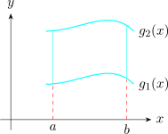 | 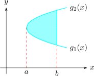 |
To evaluate \(\iint _D f(x,y)\,dA\) when \(D\) is a type I region, choose a rectangle \(R = [a,b] \times [c,d]\) that contains \(D\).
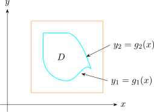
By Fubini’s theorem, \[\iint \limits _D f(x,y)\, dA = \iint \limits _R F(x,y)\,dA = \int ^b_a\int ^d_c F(x,y)\, dy \,dx .\] For fixed \(x\), \(F(x,y) = 0\) when \(y<g_1(x)\) or \(y>g_2(x)\), and \(F(x,y) = f(x,y)\) in between, so \[\int ^d_c F(x,y)\,dy = \int ^{g_2(x)}_{g_1(x)} f(x,y)\,dy .\] This proves the following.
Theorem 3.3.1. If \(f\) is continuous on a type I region \(D = \{ (x,y) \mid a\leq x \leq b,\ g_1(x)\leq y\leq g_2(x)\}\), then \[\iint \limits _D f(x,y)\,dA = \int ^b_a\int ^{g_2(x)}_{g_1(x)} f(x,y)\,dy\,dx .\] If \(f\) is continuous on a type II region \(D = \{ (x,y) \mid c\leq y \leq d,\ h_1(y)\leq x\leq h_2(y)\}\), with \(h_1\) and \(h_2\) continuous, then \[\iint \limits _D f(x,y)\,dA = \int ^d_c\int ^{h_2(y)}_{h_1(y)} f(x,y)\,dx\,dy .\]
A type II region lies between the graphs of two continuous functions of \(y\), so horizontal lines meet it in a single segment.
| 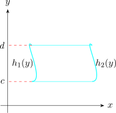 | 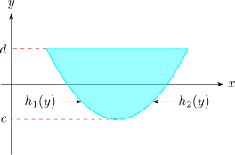 |
The limits of the inner integral may depend on the outer variable; the limits of the outer integral must be constants.
Example 3.3.2. Evaluate \(\iint _D (x + 2y)\,dA\), where \(D\) is the region bounded by the parabolas \(y = 2x^2\) and \(y = 1 + x^2\).
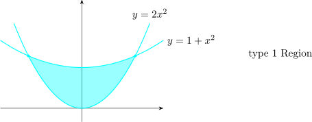
Solution. The parabolas meet where \(2x^2 = 1 + x^2\), that is \(x = \pm 1\). Between these, \(2x^2\leq y\leq 1 + x^2\), so \(D\) is a type I region and \begin {align*} \iint \limits _D (x + 2y)\,dA & = \int ^1_{-1}\int ^{1 + x^2}_{2x^2} (x + 2y)\,dy\,dx = \int ^1_{-1}\Big [xy + y^2\Big ]_{y=2x^2}^{y=1+x^2}dx\\ & = \int ^1_{-1}\left (-3x^4 - x^3 + 2x^2 + x + 1\right )dx\\ & = 2\int _0^1\left (-3x^4 + 2x^2 + 1\right )dx = 2\left (-\frac 35 + \frac 23 + 1\right ) = \frac {32}{15}, \end {align*}
the odd terms \(-x^3\) and \(x\) integrating to zero over \([-1,1]\).
Example 3.3.3. Find the volume of the solid that lies under the paraboloid \(z = x^2 + y^2\) and above the region \(D\) in the \(xy\)-plane bounded by the line \(y = 2x\) and the parabola \(y = x^2\).
Solution. The curves meet at \((0,0)\) and \((2,4)\). As a type I region, \[D = \{ (x,y) \mid 0 \leq x\leq 2,\ x^2 \leq y \leq 2x\},\] and \begin {align*} V & = \int ^2_0\int ^{2x}_{x^2}(x^2 + y^2)\,dy \,dx = \int ^2_0\left [x^2y + \frac {y^3}{3}\right ]_{y=x^2}^{y=2x}dx\\ & = \int ^2_0\left ( -\frac {x^6}{3} -x^4 +\frac {14 x^3}{3}\right ) dx = -\frac {128}{21} - \frac {32}{5} + \frac {56}{3} = \frac {216}{35}. \end {align*}
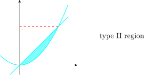
As a type II region, \(y = 2x\) gives \(x = \frac {y}{2}\) and \(y = x^2\) gives \(x = \sqrt y\), so \[D = \{(x,y) \mid 0\leq y\leq 4,\ \tfrac {y}{2}\leq x \leq \sqrt {y}\},\] and \[V = \int ^4_0\int ^{\sqrt {y}}_{y/2}(x^2 + y^2)\,dx \,dy = \int ^4_0\left ( \frac {y^{3/2}}{3} + y^{5/2} - \frac {y^3}{24} - \frac {y^3}{2}\right ) dy = \frac {216}{35},\] in agreement.
Example 3.3.4. Evaluate \(\iint _D xy\,dA\), where \(D\) is the region bounded by the line \(y = x - 1\) and the parabola \(y^2 = 2x + 6\),
- 1.
- regarding \(D\) as a type I region, and
- 2.
- regarding \(D\) as a type II region.
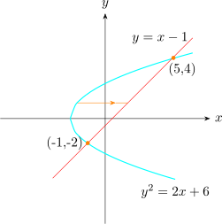
Solution. The curves meet where \((x - 1)^2 = 2x + 6\), that is \(x^2 - 4x - 5 = 0\), so at \((-1,-2)\) and \((5,4)\).
- 1.
- As a type I region, the lower boundary changes at \(x = -1\): for \(-3\leq x\leq -1\) the region lies between the two halves of the parabola, and for \(-1\leq x\leq 5\) between the line and the upper half. So \[\iint \limits _D xy\, dA = \int ^{-1}_{-3}\int ^{\sqrt {2x + 6}}_{-\sqrt {2x + 6}}xy\,dy\,dx + \int ^{5}_{-1}\int ^{\sqrt {2x + 6}}_{x - 1}xy\,dy\,dx .\] The first integral is \(0\), since \(y\) is odd over a symmetric interval, and the second is \(36\), but two integrals are needed.
- 2.
- As a type II region, \(D = \{(x,y) \mid -2\leq y\leq 4,\ \frac 12 y^2 - 3\leq x\leq y + 1\}\), and a single integral suffices: \begin {align*} \iint \limits _D xy\, dA & = \int ^4_{-2}\int ^{y+1}_{\frac 12 y^2-3}xy\,dx\,dy = \int ^4_{-2}\frac {y}{2}\left [(y + 1)^2 - \left (\tfrac 12 y^2 - 3\right )^2\right ]dy\\ & = \int ^4_{-2}\left (-\frac {y^5}{8} + 2y^3 + y^2 - 4y\right ) dy = 36 . \end {align*}
Example 3.3.5. Find the volume of the tetrahedron bounded by the planes \(x + 2y + z = 2\), \(x = 2y\), \(x = 0\) and \(z = 0\).
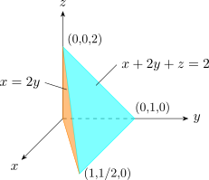
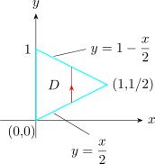
Solution. The tetrahedron lies above its base \(D\) in the \(xy\)-plane, the triangle bounded by \(x = 0\), \(x = 2y\) and the line \(x + 2y = 2\) in which the top face meets \(z = 0\). The lines \(x = 2y\) and \(x + 2y = 2\) meet at \(\left (1,\frac 12\right )\), so \[D = \left \{(x,y) \mid 0\leq x\leq 1,\ \frac {x}{2}\leq y \leq 1 - \frac {x}{2}\right \},\] and the volume lies under \(z = 2 - x - 2y\): \[V = \int ^1_0\int ^{1 -x/2}_{x/2} ( 2 - x -2y)\,dy\,dx = \int ^1_0(x^2 - 2x + 1)\,dx = \frac {1}{3} .\]
Example 3.3.6. Evaluate the iterated integral \(\int ^1_0\int ^1_{x}\sin (y^2)\,dy\,dx\).
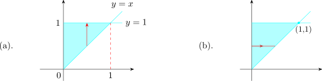
Solution. The inner integral cannot be done in elementary terms, so reverse the order. The region is \(D = \{(x,y)\mid 0\leq x\leq 1,\ x\leq y\leq 1\}\), the triangle with vertices \((0,0)\), \((0,1)\) and \((1,1)\) shown in (a), which as a type II region, in (b), is \(\{(x,y)\mid 0\leq y\leq 1,\ 0\leq x\leq y\}\). So \begin {align*} \int ^1_0\int ^1_{x}\sin (y^2)\,dy\,dx & = \int ^1_0\int ^y_{0}\sin (y^2)\,dx\,dy = \int ^1_0y\sin (y^2)\,dy\\ & = \left [-\frac {\cos y^2}{2}\right ]_0^1 = \frac {1}{2}(1 - \cos 1)\approx 0.2298 . \end {align*}
Example 3.3.7. Reverse the order of integration in \(\int _0^4\int _{\sqrt x}^2 e^{y^3}\,dy\,dx\), and evaluate it.
Solution. The region is \(0\leq x\leq 4\), \(\sqrt x\leq y\leq 2\), which is the same as \(0\leq y\leq 2\), \(0\leq x\leq y^2\). So \[\int _0^4\int _{\sqrt x}^2 e^{y^3}\,dy\,dx = \int _0^2\int _0^{y^2}e^{y^3}\,dx\,dy = \int _0^2 y^2e^{y^3}\,dy = \frac {e^8 - 1}{3}\approx 993.3 .\]
Example 3.3.8. Use a double integral to find the area of the region enclosed by \(y = x^2\) and \(y = 8 - x^2\).
Solution. The curves meet at \(x = \pm 2\). Integrating the constant \(1\), \[A = \int _{-2}^2\int _{x^2}^{8 - x^2}dy\,dx = \int _{-2}^2 (8 - 2x^2)\,dx = 32 - \frac {32}{3} = \frac {64}{3} .\]
Questions on this section
Stuck on something here? Ask below and it stays attached to this topic.